01 Prism Loop
rounded route
A continuous loop with a cut-through route. It feels more like one app-symbol surface than separate line art.
/logo-concepts/variant-01-flow-loop.svg
White marks only, shown on the same pink AxonRouter gradient tile. No embedded app tile inside the SVG, no pasted text, no black border.
A continuous loop with a cut-through route. It feels more like one app-symbol surface than separate line art.

A clean gateway path with a secondary handoff lane. Useful if the logo should feel like infrastructure and routing.

A split gateway shape with a route cut through the middle. Bold, simple, and readable as an app icon.
The previous best direction preserved as a clean foreground mark, with no embedded gradient tile.

Three provider/model lanes woven into one output. More direct to AxonRouter's routing product concept.
A folded signal path for handoffs between endpoints. The center cut keeps it from feeling like a pasted symbol.